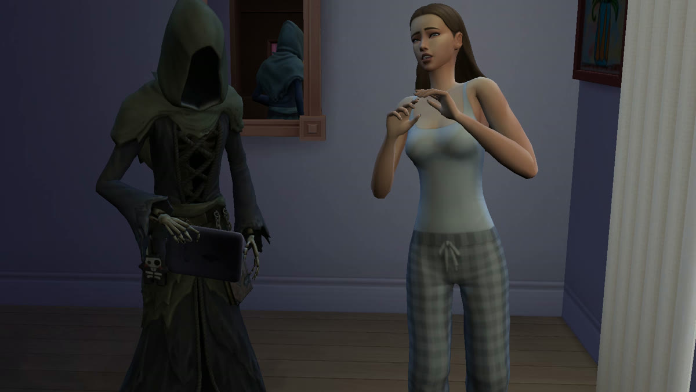
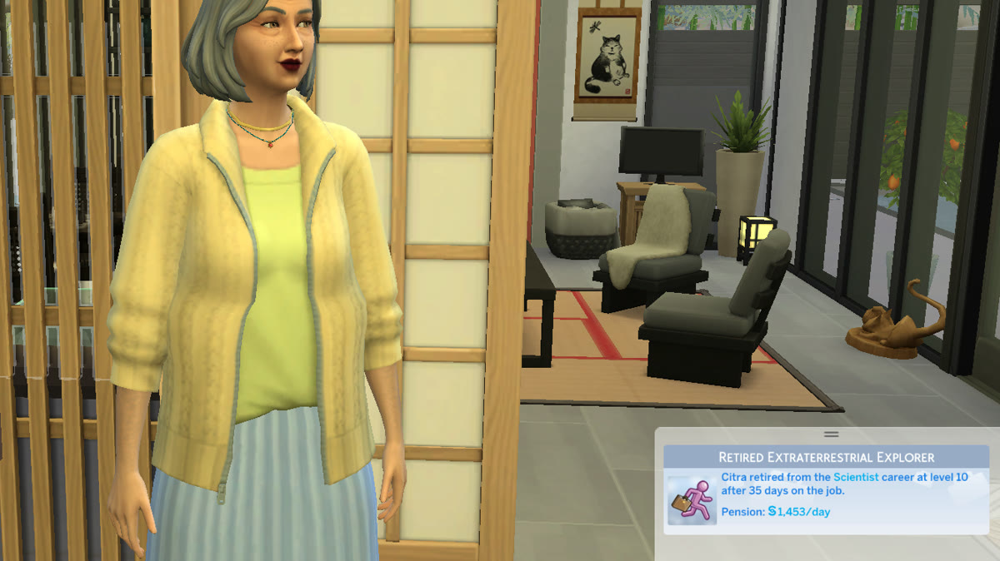

End Life
Every death in the game. One menu. No cheats required.

Click any Sim, choose End Life..., and pick from the game's catalogue of demises: poison, Murphy bed, vicious killer rabbit, broken heart, and everything else your packs provide. Full death scenes, Grim Reaper included. Your own Sim walks away whistling.
- The clicked Sim passes, never your storyteller
- Pets exempt; babies, infants and toddlers protected
- Works on anyone you welcome in: befriend a stranger, invite them onto your lot, and the menu is waiting
- No packs required: the menu adapts to what you own
Real Retirement
Retirement should be a chapter, not a blank page.

In the base game, a retired Sim's career panel forgets the job they held. Real Retirement keeps their working life on the card: the job they retired from, the career and level they reached, the days they put in, and the pension it earned them.
- Drawn with the game's own career card and job titles
- Works with every career from every pack you own
- Appears the moment a Sim retires, and for Sims who retired before you installed it
- No settings, nothing to click. Retiring works exactly as before.